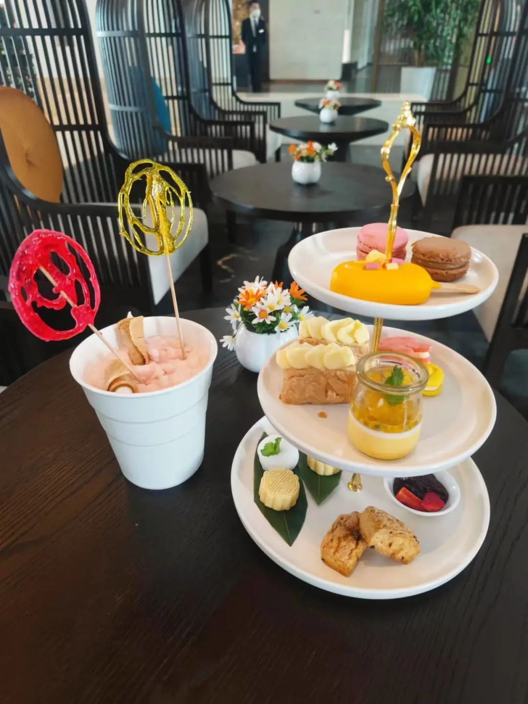
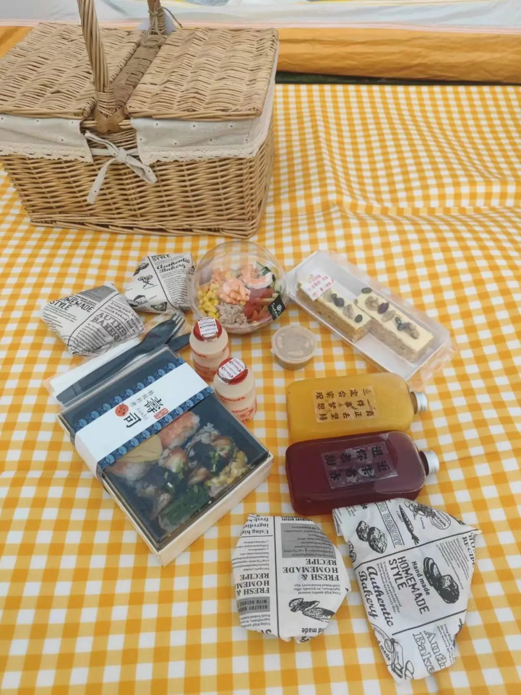
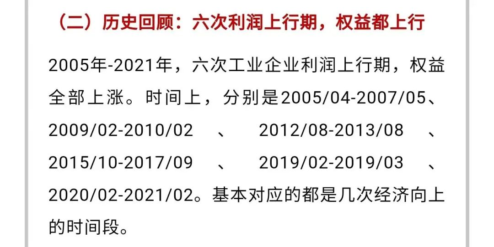
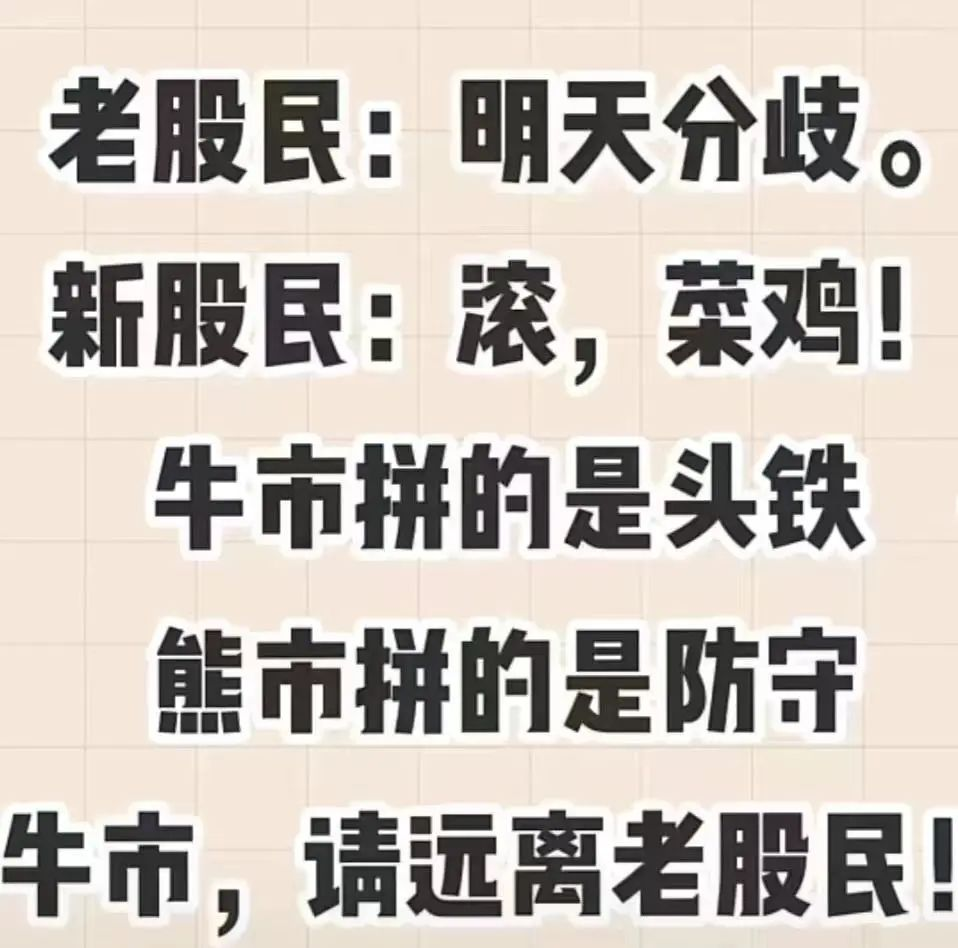
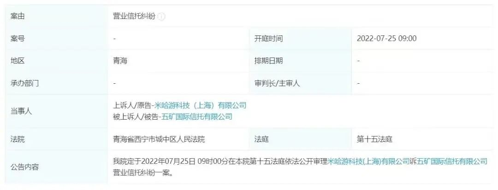
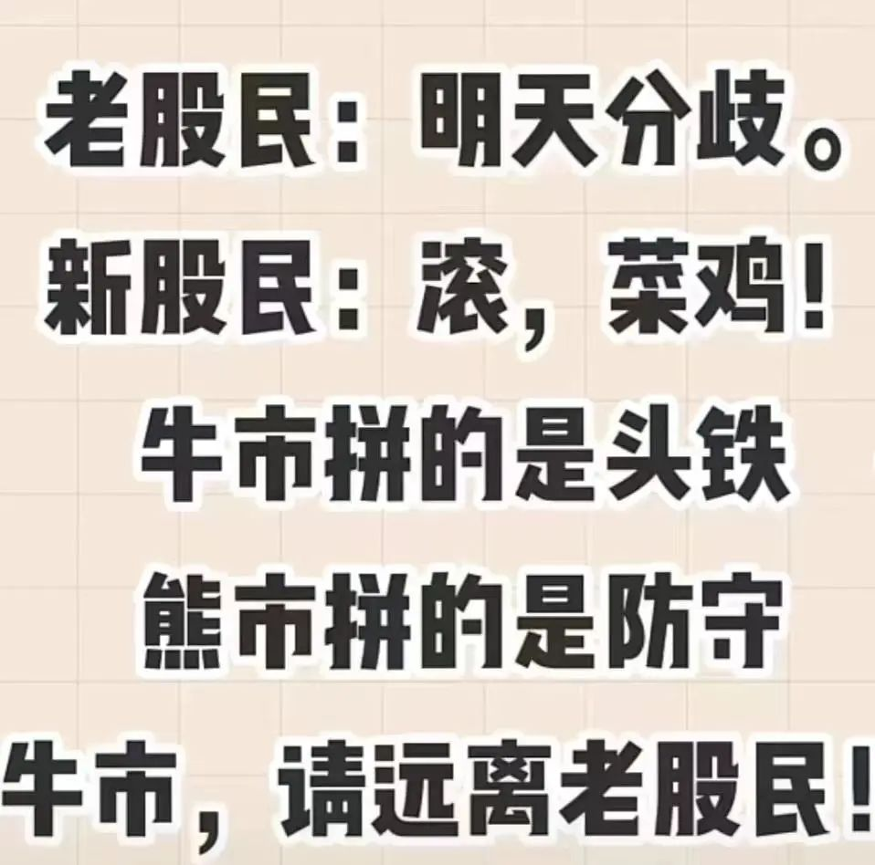
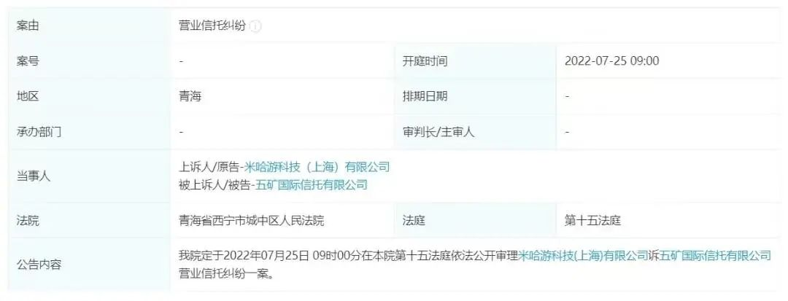
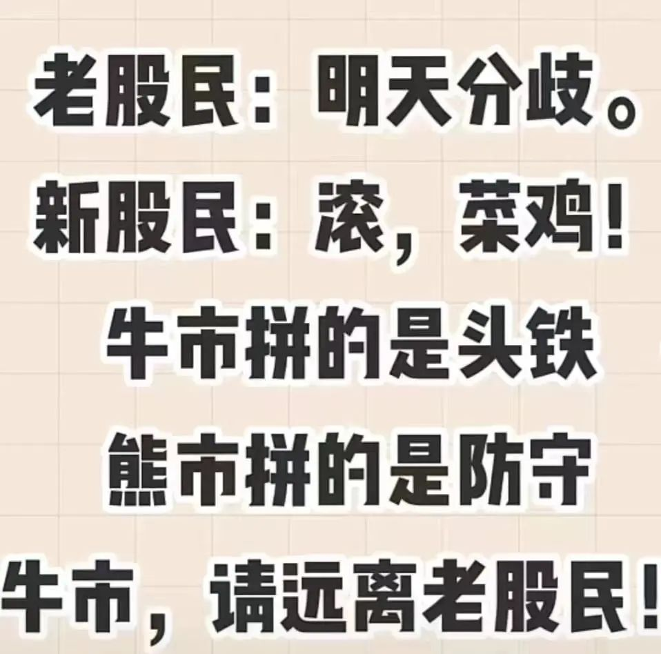
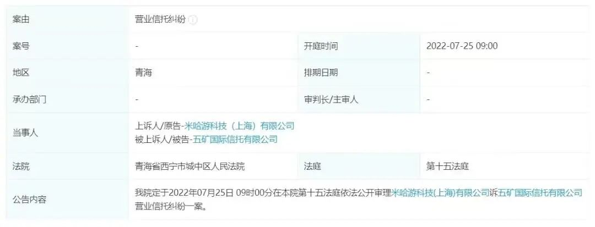

又到了新老韭菜互道SB的时候
原创 V姐万事屋 V姐来了 2022-06-28 21:46 发表于上海 原文链接(长) 原文链接(短)Hi, 我是V姐。
最近带着小朋友们在外面住酒店，感受了一下上海的经济复苏，报复性消费不算凶猛。之前比较热门的一些酒店，订第二天甚至当天的都有房间。酒店里部分餐厅可以堂食，人很少。部分酒店推出了户外野餐，户外烧烤等项目，热度也一般。
包场下午茶：

不野餐的人生不完整：

昨天国家统计局公布了 **工业企业利润** 数据，5月规模以上工业企业利润同比下降6.5%，降幅较上月收窄2个百分点。虽然还是有点拉跨，总归在慢慢往上走。
工业企业利润这个数据，它可以帮助我们来预测中国公司的整体利润情况，从而预判股市的趋势。
华创证券做过一个复盘，2005-2021年，六次工业企业利润上行期间，股市都是上涨的。看最近大A的走势，很有可能再次重演。

从公布的数据看，行业分化比较大。比如上游采矿业涨到飞起，下游制造业还是烂仔一枚。
基本消费品行业里，61.5%利润改善。如果说前一个阶段的普涨，类似于大水灌满预期下的水牛，下一个阶段A股很有可能会出现分化了，多少要回归基本面一些。随着经济复苏，前面踏空的朋友，如果害怕追高新能源，消费板块可以关注一下。
伴随今天针对密接/入境人员的隔离措施放松，旅游航空免税等大涨，中国中免这两天涨幅超过10个点。昨天央行行长易纲接受采访说， **下半年货币政策会继续从总量上发力，以支持经济复苏。**
所以说M2扩张还会持续，主要城市地产销售数据持续3周都在上行，苏州6月第三周，一个星期新房成交快6000套，赶上4月一个月的销量。社融数据不出意外的话，6月同比增长会很不错。现在对于短期行情是回调还是轮动，谁也说不好。券商又开始集体唱多，他们越这么搞，老股民总觉得哪里不对 现在又到了新老韭菜互道傻逼的时候：

昨天还有个瓜，那个做原神赚肿了的米哈游，23个亿的理财暴雷，把五矿信托给告了。。。

米哈游20+21年利润，保守估计100多个亿。前年他们账上趴了50个亿，拿出来买理财，当时各家代销机构都派出了专门的VIP团队赶到上海，争取这个大客户。他们买的招行这款代销的信托产品，投资方向是房地产融资。
结果今年3月底到期后，无法兑付，一查招行是违规代销，存在故意隐瞒信托产品信息、故意隐瞒投资风险、风控把控不严等问题，据说这个暴雷也是前行长田惠宇被免职的原因之一。
米哈游这公司就跟印钞机一样，名副其实的现金奶牛。如果创始人本身对于理财投资不是内行人，那么越是这种公司，越容易被盯上，一些不良资产，包装一下，里应外合卖给他们。这种手法专坑地主家的傻儿子，各种投资骗局，围绕着大大小小的富二代们。爹妈辛苦挣钱，他们辛苦被骗。
我每次看到这种新闻，都想到小时候做的数学题，一个池子两根水管，进水管打开，出水管同时也打开。。。以前总是想，现实中哪里有这么傻的事情？
后来我懂了，是我天真了，原来真的有
现在又到了新老韭菜互道傻逼的时候：

昨天还有个瓜，那个做原神赚肿了的米哈游，23个亿的理财暴雷，把五矿信托给告了。。。

米哈游20+21年利润，保守估计100多个亿。前年他们账上趴了50个亿，拿出来买理财，当时各家代销机构都派出了专门的VIP团队赶到上海，争取这个大客户。他们买的招行这款代销的信托产品，投资方向是房地产融资。
结果今年3月底到期后，无法兑付，一查招行是违规代销，存在故意隐瞒信托产品信息、故意隐瞒投资风险、风控把控不严等问题，据说这个暴雷也是前行长田惠宇被免职的原因之一。
米哈游这公司就跟印钞机一样，名副其实的现金奶牛。如果创始人本身对于理财投资不是内行人，那么越是这种公司，越容易被盯上，一些不良资产，包装一下，里应外合卖给他们。这种手法专坑地主家的傻儿子，各种投资骗局，围绕着大大小小的富二代们。爹妈辛苦挣钱，他们辛苦被骗。
我每次看到这种新闻，都想到小时候做的数学题，一个池子两根水管，进水管打开，出水管同时也打开。。。以前总是想，现实中哪里有这么傻的事情？
后来我懂了，是我天真了，原来真的有
现在又到了新老韭菜互道傻逼的时候：

昨天还有个瓜，那个做原神赚肿了的米哈游，23个亿的理财暴雷，把五矿信托给告了。。。

米哈游20+21年利润，保守估计100多个亿。前年他们账上趴了50个亿，拿出来买理财，当时各家代销机构都派出了专门的VIP团队赶到上海，争取这个大客户。他们买的招行这款代销的信托产品，投资方向是房地产融资。
结果今年3月底到期后，无法兑付，一查招行是违规代销，存在故意隐瞒信托产品信息、故意隐瞒投资风险、风控把控不严等问题，据说这个暴雷也是前行长田惠宇被免职的原因之一。
米哈游这公司就跟印钞机一样，名副其实的现金奶牛。如果创始人本身对于理财投资不是内行人，那么越是这种公司，越容易被盯上，一些不良资产，包装一下，里应外合卖给他们。这种手法专坑地主家的傻儿子，各种投资骗局，围绕着大大小小的富二代们。爹妈辛苦挣钱，他们辛苦被骗。
我每次看到这种新闻，都想到小时候做的数学题，一个池子两根水管，进水管打开，出水管同时也打开。。。以前总是想，现实中哪里有这么傻的事情？
后来我懂了，是我天真了，原来真的有